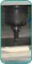
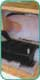
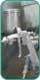
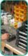

Solutions
Our solutions are based on your needs. First, we ask you about the purpose of your prototype and its usability requirements. Then, we recommend a prototyping or low-volume manufacturing solution that balances your quality and performance needs with your budget and time constraints. From one part to several hundred parts, we have the capability and bandwidth to handle your requests.
Customized Solutions
At A+J, we are focused on customizing a solution to your prototyping or manufacturing need. Every project is a challenge with its own complexities. For every project, we craft a production process that best suits the successful fulfillment of its unique needs. Rush job? Tight tolerances? Two-color over-molding? We have a solution.
|  | CNC Machining SolutionsWhen you are ready to convert your 3D CAD data into a holdable, touchable 3D form, we can help. From high-density foam ideation models for design check, to engineering prototypes for fit check, we provide CNC machining solutions in numerous shapes, sizes and materials. |
|  | RTV Mold/Urethane Casting SolutionsWhen you are ready to perform engineering, usability or market testing of your assembly, we can help. Our soft tooling, cast urethane part technology is a cost efficient way to create limit quantities of production-like parts. From rigid urethanes to tinted clear parts to cast-in color elastomers, we have solutions. |
|  | Finishing SolutionsThe finishing touch is always a critical element of any design. When you need to prepare color studies, two-color or textured parts, vapor polishing or production painting, we can help. We are a certified EMI (6050) shielding source! |
|  | Value-Added Light Assembly SolutionsWhen you need to lessen your headaches and increase your control, we can help. We offer value added assembly services including hardware ordering (from your vendors) and installation, graphics application and custom crating. Let us handle your fulfillment needs. |